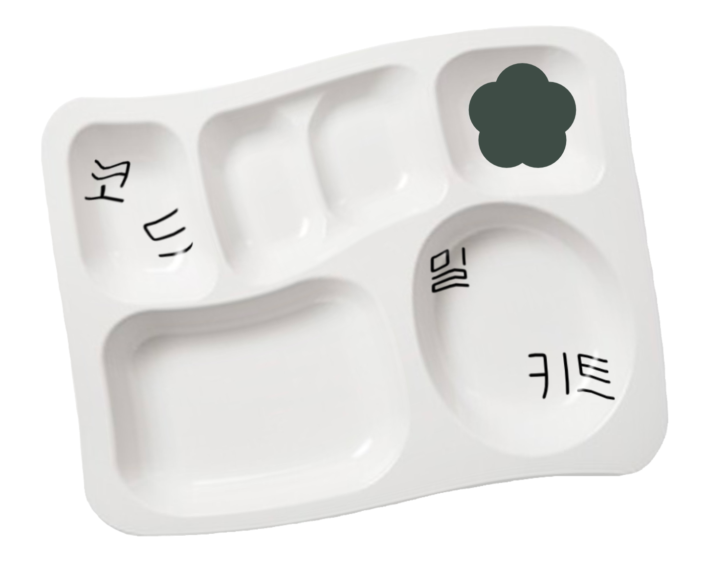

<코드 밀 키트>는 제12회 서울미디어시티비엔날레 사전프로그램 «정거장» 커미션으로 제작된 프로젝트입니다. 2022년 7월 21일부터 10월 3일까지 매주 토요일 오전에 서울시립 남서울미술관에서 컴퓨터 프로그래밍 언어인 '코드'에 관한 질문을 모으고 대화하는 워크숍으로 진행됩니다. 워크숍은 언어로서 코드, 프로그래밍 패러다임, IT 신화, 문화자본, 오픈 소스 등 매주 다른 소주제로 구성되며, 사전에 참여자를 모집하고 읽기 자료를 제공합니다. 일련의 과정에서 모아진 생각들은 교구로 제작되어 10월중에 발표할 예정입니다. 워크숍에 참여를 원하시는 분은 신청서(구글폼 링크)를 작성해주세요.

